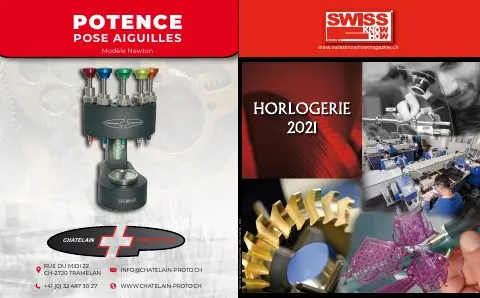

En bref
Le président de la FH dresse le bilan d'une année 2020 marquée par la pandémie : après un effondrement de 80 % des exportations en avril, l'année devrait se solder par un recul de 23 à 25 %, du jamais vu depuis 80 ans. Seule la Chine reste positive ; les États-Unis, le Royaume-Uni post-Brexit, l'Europe et Hong Kong sont passés en revue. Jean-Daniel Pasche observe l'essor du commerce en ligne, qui complète sans remplacer la vente traditionnelle, et réaffirme la lutte contre le protectionnisme, en soutenant l'accord de libre-échange avec l'Indonésie soumis au vote le 7 mars et en visant le Mercosur. Un encadré présente la nouvelle marque collective « Swiss » enregistrée dans l'UE contre la contrefaçon. L'interview est publiée en français et en anglais.
« L'horlogerie suisse est solide ; la branche résistera car les produits restent attractifs. »— Jean-Daniel Pasche
L'interview intégrale
Ébranlée par la pandémie mondiale de coronavirus, l’horlogerie n’a pas échappé à la crise et à ses répercussions économiques. La branche a enregistré des chiffres d’exportation en forte baisse. Dans la tempête, le capitaine de l’horlogerie suisse garde le cap et continue de se battre pour les intérêts du fleuron de l’économie helvétique.
Quel bilan tirez-vous des exportations horlogères pour cette année particulière ?
L’année 2020 a bien commencé, on pensait même qu’elle serait positive, mais tout s’est écroulé en mars. Les exportations horlogères ont enregistré de terribles baisses, en particulier en avril avec une chute de 80 %. Puis, les mois ont passé et les chiffres se sont un peu améliorés. Globalement, l’année 2020 se terminera avec une baisse de 23 à 25 %. Cela ne fait aucun doute, avec la fermeture des entreprises, des magasins et l’interruption du tourisme, le bilan est fortement négatif pour le secteur horloger. Nous n’avons pas connu telle situation depuis 80 ans. Il règne un climat d’incertitude ; la montre étant un produit émotionnel, la situation n’est pas favorable.
Où en sont les principaux marchés ?
Il n’y a que la Chine qui est positive. Le pays est sorti en premier de la crise. Les Chinois ne voyagent plus ; ils consomment local. Du côté des États-Unis, la situation pandémique est difficile et pour l’horlogerie, une période électorale n’est jamais propice. À présent, bien que le conflit commercial ne soit pas réglé, on devrait retrouver une certaine sérénité. En ce qui concerne le Royaume-Uni, il y a eu un effet positif avec le Brexit d’autant plus que la Suisse avait signé un accord de libre-échange qui entre en vigueur le 1er janvier. Cela dit, il faudra encore pouvoir y entrer physiquement !
L’Europe en général reste très compliquée, quant à Hong Kong, sa situation politique est difficile. Je ne vois guère d’amélioration à court terme.
La pandémie a-t-elle accéléré certains phénomènes ?
Oui, le e-commerce s’est beaucoup développé. Toutefois, il ne remplacera jamais le commerce traditionnel. Les ventes en ligne représentent une bonne alternative. Le secteur va encore prendre de l’importance mais il a ses limites sur le plan logistique. Les marques ont besoin d’intégrer les deux canaux de distribution.
Faciliter les exportations reste l’une de vos principales batailles ?
Oui, le protectionnisme nous préoccupe beaucoup. Certains pays rendent les importations difficiles. Notre mission consiste à faire en sorte que de telles mesures ne se prennent pas et si nécessaire, intervenir avec nos organes fédéraux pour faire respecter les accords internationaux. En 2020, cela nous a beaucoup occupés car les obstacles au commerce sont en augmentation. Nous avons plus que jamais besoin du libre-échange.
Le 7 mars prochain, le peuple suisse se prononcera sur l’accord de libre-échange avec l’Indonésie signé en 2018. La Fédération de l’industrie horlogère suisse FH se positionne pour l’accord et donc contre le référendum car il est primordial pour nous d’avoir de meilleures conditions cadres. L’Indonésie, qui compte 260 millions d’habitants, est en phase de devenir une puissance économique mondiale. Puis, il faudra impérativement se soucier du Mercosur ; la situation avec le Brésil et l’Argentine doit absolument s’améliorer.
Le mot de la fin pour 2021 ?
Beaucoup d’incertitudes nous attendent et nous ne sommes certainement pas au bout de nos surprises, mais nous restons persuadés que l’année 2021 sera meilleure que 2020. Nous ne savons toutefois pas quand l’horlogerie retrouvera les chiffres d’avant la crise sanitaire. L’horlogerie suisse est solide ; la branche résistera car les produits restent attractifs.
Nouveauté de la FH en matière de lutte contre les contrefaçons
La Fédération de l’industrie horlogère suisse FH, en sa qualité d’association de défense des intérêts globaux de l’horlogerie suisse, a enregistré une marque collective dans l’Union européenne composée du mot « Swiss » en 2020. Il s’agit d’un nouvel instrument de défense du Swiss Made à l’étranger. Il sera désormais possible d’invoquer le droit des marques.
Texte paru dans Swiss Knowhow – Horlogerie 2021, p. 2-3.
Personnes citées
- Jean-Daniel PaschePrésident de la FH

Paru dans
Swiss Knowhow – Horlogerie 2021
2021 · page 02-03 · article original en français
Lire l'article complet PDF